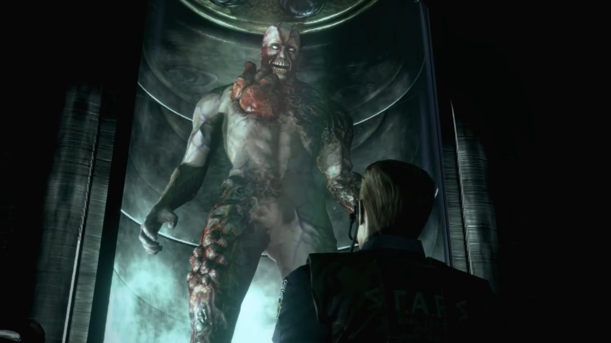

Tyrant

Tyrant คือ สิ่งมีชีวิตทดลองที่ Umbrella Corporation พัฒนาขึ้นมาเพื่อให้เป็นทหารระดับสุดยอดของพวกเขา
ลักษณะของ Tyrant
- ตามผลการวิจัยพบว่ามี Host เพียง 1 ใน10ล้านที่มีศักยภาพเพียงพอที่จะกลายเป็น Tyrant สิ่งนี้เป็นเอกลักษณ์ที่ยกมาจากความเข้ากันได้ทางพันธุกรรมของ Progenitic มีเพียง 10% ของประชากรทั้งหมดที่จะมีภูมิคุ้มกัน T-Virusแม้ว่าจะสัมผัสโดยตรง
- ถ้าไวรัสพบโฮสต์ที่เหมาะสม มันจะส่งผลให้โฮสต์มีขนาดตัวใหญ่ มีพละกำลัง ความเร็ว และความคล่องตัวมากขึ้น นอกจากนี้ยังนำไปสู่การพัฒนาที่มากขึ้นและเปลี่ยนโครงสร้างภายนอกทำให้โครงสร้างกระดูกเปลี่ยนเป็นกรงเล็บขนาดใหญ่ที่ออกมาจากร่างกายโฮสต์ ขณะที่ตัวไวรัสเองก็จะมีประโยชน์ต่อโฮสต์ซึ่งจะบังคับให้ร่างกายหลั่งสารอะดรีนาลีนทำให้หัวใจและหลอดเลือดขยายตัวและยื่นออกมาจากหน้าอก
- สายพันธุ์แรกของไทแรนท์ที่อันตรายซึ่งมาพร้อมกับใบหน้าที่ผิดปรกติตลอดจนสติปัญญาลดลงจนสั่งการไม่ได้ โดยปัญหาของT-001และT-002คือการเน่าเปื่อยของผิวหนัง
- ผู้ที่เป็นสัตว์ทดลองคือ Lisa Trevor ในช่วงวัยรุ่นเธอถูกลักพาตัวโดยกลุ่มคนสนิทของสเปนเซอร์ นับตั้งแต่การลักพาตัว ลิซ่ามีระดับการทดลองที่เหลือเฟือต่อโปรเจนิเตอร์และไวรัสประเภทอื่นๆ
ประเภทของไทแรนท์ แบ่งเป็น 3 ประเภท ได้แก่ T-00,T-10 และประเภทอื่นๆ
- รุ่น00 (Zero-Zero) หมายถึง เป็นไทแรนท์ที่ทดลองในการสร้างไทแรนท์
- T-001 ถูกปล่อยออกมาโดยไม่ได้ตั้งใจ กำจัดโดย Rebecca Chambers และ Billy Coen สังหารโดย Albert Wesker
- T-002 ถูกปล่อยโดย Albert Wesker สังหารโดย S.T.A.R.S.
- T-0400TP ถูกปล่อยโดย Carter โดนดูดกลืนโดย Nyx
- T-078 เป็นอีกประเภทหนึ่งของ T-103 และถูกฝึกให้ต่อต้าน B.O.W. ใน Rockford Island ถูกปล่อยโดย Alfred Ashford สังหารโดย Claire Redfield
- T-091 เป็นไทแรนท์ที่เกิดจาก tG-Virus ตัวแรก สังหารโดย Bruce McGivern
- T-092 กลายพันธุ์จาก Morpheus D. Duvall โดยใช้ tG-Virus กำจัดโดย Bruce McGivern เสียชีวิตจากการขยายตัวจนหยุดไม่ได้
- รุ่น 10(Zero-Oh) หมายถึง ไทแรนท์ที่พัฒนาสมบูรณ์แล้ว
- T-103 เป็นรุ่นที่ใช้ผลิตจำนวนมาก ถูกส่งมาที่ Raccoon City ให้หาตัวอย่าง G-Virus สังหารโดย Leon S. Kennedy
- T-104 เป็นอีกรุ่นของ T-103 ปรากฎใน non-canon minigame
- อื่นๆ
- Nemesis T-Type เป็นไทแรนท์ที่ใช้ T-103 เป็นโฮสต์โดยฉีด NE-alpha Parasite เพื่อให้มีความฉลาดมากขึ้น ถูกส่งมาที่ Raccoon City เพื่อสังหารหน่วย S.T.A.R.S. ที่ยังรอดชีวิตอยู่ สังหารโดย Jill Valentine
- Thanatos ถูกสร้างโดย Greg Muller สังหารโดย George Hamilton
- Hypnos เป็นตัวทดลองสร้างไทแรนท์ที่สามารถสร้างความเสียหายได้รุนแรง พัฒนามาจาก T-103 ถูกสังหารโดย Ark Thompson
- Pluto เป็นตัวทดลองสร้างไทแรนท์เพื่อทดสอบเกี่ยวกับปฏิกิริยาของไทแรนท์เมื่อสูญเสียการมองเห็น สังหารโดย Bruce McGivern
- Ivan เป็นไทแรนท์ที่ถูกสร้างโดยมีความฉลาดอยู่ในขั้นสูง ทั้งสองถูกสังหารโดย Albert Wesker
- T-A.L.O.S. ย่อมาจาก Tyrant-Armour Leathal Organic System เป็นไทแรนท์ที่สวมเกราะหนัก สังหารโดย Chris Redfield และ Jill Valentine